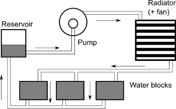

Cooling
The cooling system keeps your computer from overheating. Fans blow cool air in and hot air out, while heat sinks (metal fins) pull heat away from hot parts like the CPU and GPU. Liquid cooling (like a car radiator for your PC) works even better for powerful systems. Without cooling, your PC would slow down or even shut off to avoid damage!
First, check all fans are spinning properly and radiator pumps (if liquid-cooled) are running, while ensuring heatsinks are dust-free and making full contact with the CPU/GPU. Monitor temperatures using HWMonitor or similar software to identify overheating components under load.